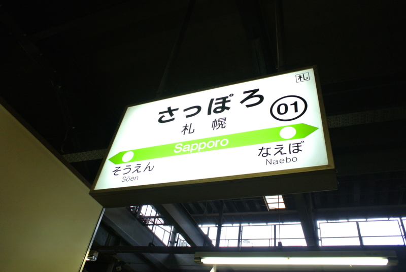

札幌でだるだるした。
執筆日時：

今回はあまり自由に使える時間がなくて、札幌での観光は時計台と北海道大学ぐらい。札幌はほんと道が広くて、歩くとちょっと疲れる。


時計台
「日本三大がっかり名所」の一つ、時計台にも行った。


おそらく、この時計台をパンフレットみたいにかっこよく撮影できるスポットがコレだと思い、事実、みんなこの台に登って撮影していたのだけど……

実際は記念撮影の台なのかもしれない。ボランティアの人が常駐していて、観光客の写真を撮ってあげていた。
そういえば、僕もクラーク像の前で老夫婦を、小樽駅で中年夫婦をそれぞれ撮ってあげた。死ぬまで幸せに生きろ、コンチクショーと思った。
